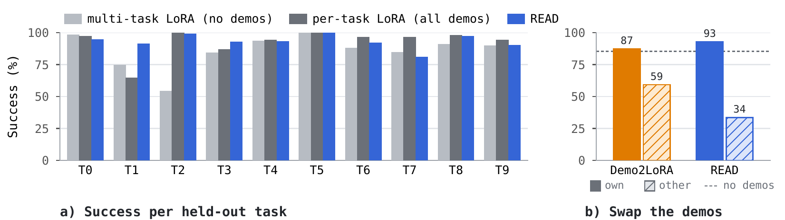
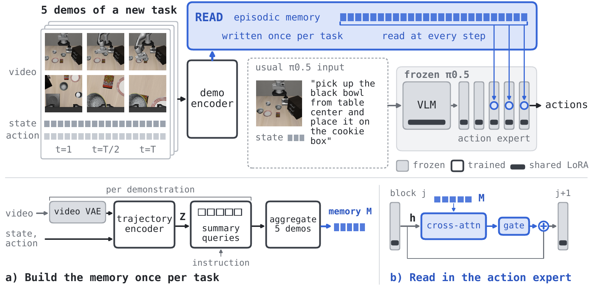
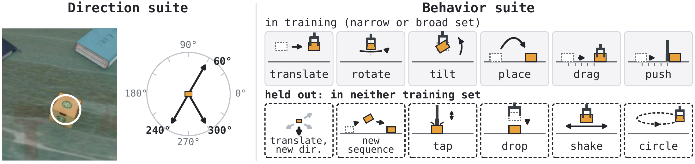

READ: What Makes a Pretrained VLA Teachable by Demonstration?
TL;DRShow a pretrained VLA (π0.5) five demonstrations of a new task, and it performs the task with no gradient step on it: the demonstrations are written once into a memory that the policy reads while it acts. On held-out LIBERO-Gen tasks, five demonstrations match per-task fine-tuning (92.8% vs 92.5%). Swap the demonstrations and the robot moves the object the new way, even an object it never manipulated in training; scattering training directions across objects raises success on new object–direction pairings from 1% to 79%.
One scene, one instruction, move the bread. Only the five demonstrations change, and the robot follows them. The bread was never manipulated in training. 2× speed.
Write the demonstrations once, read them at every step
READ adds a demonstration encoder and a few gated readers to π0.5. The encoder turns five demonstrations (camera video, robot states and actions) into a fixed memory. π0.5 keeps its usual inputs: camera images, robot state and the instruction. While it generates each action chunk, readers in its action expert query the memory.
Schematic. The memory holds 100 tokens on LIBERO-Gen and 260 on our two benchmarks; the highlighted tokens are illustrative.
The stage between pretraining and adaptation. The encoder, the readers and one LoRA shared by all tasks are trained once across many training tasks; π0.5's pretrained weights stay frozen. A new task then costs one encoder pass. This is the stage we vary to ask which training experience makes a policy teachable.
Trained on some tasks, tested on others
Every benchmark is split by task. READ is trained on the training tasks only, and is tested mainly on tasks that are not among them. At test time it receives five demonstrations that were never trained on, and each rollout starts from an initial state not used in training.
| Benchmark | Trained on | Tested on (absent from training) |
|---|---|---|
| LIBERO-Gen | 164 tasks: pick up a bowl from one place, put it in another | 10 new pairings of a pick-up place and a destination; each place appears in training, the pairing never does |
| Direction suite | 37 objects, each moved in 5 of 12 directions | an object moved in a direction trained only with other objects; objects never manipulated in training; 90–150°, trained with no object |
| Behavior suite | 37 objects with 3 (narrow set) or 8 (broad set) kinds of behavior | trained behaviors on four new objects; six behaviors absent from both training sets |
Trained tasks are also tested, from new demonstrations and initial states, as a reference.
The demonstrations say what the instruction can't
In our Direction suite every task of an object shares one scene and one instruction, move the bread. What differs is the goal: one of twelve directions, 30° apart, 11 cm away. Text never says which. Each clip below is one demonstration, placed at the direction it shows.
The outline of each clip marks which kind of test that direction is for this object; the numbers are READ's success on each kind of test across the suite. Clips are expert demonstrations from the policy's head camera. Ring: where the object starts. Arrow: the goal, drawn for viewing only.
Does the policy actually follow them?
Every task of an object starts from the same scene and instruction, so a policy could ignore the demonstrations, always move the object in one default direction, and still succeed on the tasks that ask for that direction. Two controls separate that from following them, both from the same initial state and with the same instruction.
Swap the demonstrations. READ gets demonstrations of a different direction. If it reads them, the object should go where the new demonstrations point.
Remove the demonstrations. The multi-task LoRA baseline is READ without its encoder and readers: the same π0.5 with a LoRA trained on the same tasks, from instructions alone. Here the instruction is again move the bread (or move the coffee box), the same for every direction, so this baseline shows what the scene and the instruction can do on their own.
Every evaluation episode of the bread at 240°. Radial position is spread only to reduce overlap.
What in the training data makes this possible?
Two READ models train each of 37 objects in five directions, with nearly the same number of episodes (3,680 and 3,700). The shared split trains every object in the same five directions (30, 180, 210, 270 and 330°). The scattered split gives each object a different five of nine directions: all nine are trained, but each with only 19–22 of the 37 objects. Neither model has trained the bread or the coffee box below at 240°; only the scattered model has seen other objects move that way.
success on new pairings of trained objects and directions, shared split vs scattered split, with nearly the same data.
Shared split
has never seen any object move toward 240°
Scattered split
has seen other objects move toward 240°
Shared split
every object trained in the same 5 directions
Scattered split
each object trained in 5 of 9 directions
Three training objects (a mouse, a bread and a coffee box) at 240° and 300°, every evaluation episode (150 per plot). The shared model moves them toward its trained 270°. On three objects never manipulated in training, the two models are close at directions both splits train (68% vs 78%) and far apart at these two (3% vs 78%).
Beyond the covered directions: carrying helps, reaching doesn't
No training task of any object goes to 90–150°. There the landings follow the demonstrated goal but are pulled toward the neighboring trained directions, 60° and 180°. Can more data close the gap, and which data? We add 79 tasks at 75, 105, 135 and 165° on other objects, so the tested goals stay untrained.
The added data comes in one of two forms. Carrying episodes practice moving an object. Reaching episodes are cheaper to collect: the open gripper approaches the object and sweeps to just above the goal without touching it. They cover the same directions with the arm alone, so comparing the two separates practice in moving objects from practice in moving the arm.
Instruction: move the bread. The five demonstrations carry the bread 11 cm toward 120°, up and to the left in the camera view. In the clips, the ring is where the bread starts and the green disc is the goal.
A hit: the object moves at least 5.5 cm and lands less than 7.5° from the demonstrated goal, closer to it than to any training direction. The usual 12° window would count a landing at 109° as reaching 120°, though it is nearer the added 105°.
More kinds of behavior in training, more that demonstrations can teach
In our Behavior suite every task of an object again shares one instruction, manipulate the bread, and the demonstrations decide how to move it. Two READ models train on the same 37 objects: a narrow set (hold, translate, rotate) and a broad set that adds tilt, place, drag, push and sequences. The broad set has fewer episodes (3,088 vs 3,626), so it tests richer behavior coverage, not more data.
Behaviors in training (expert demonstrations)
Held out from both training sets: given only as demonstrations at test time
Where it stops
Shown circling, dropping or shaking, the broad-set model picks the object up and falls back to behaviors it was trained on. Scattering directions across objects and adding behavior kinds both widened what demonstrations could teach; these failures mark what training data should cover next.
Each pair: one of the five demonstrations (another episode of the task, so the scene differs), then READ on a test episode, 2× speed. Narrow set 0/900 and broad set 17/900 on the six held-out behaviors, mostly tapping.
Five demonstrations match per-task fine-tuning
On ten held-out LIBERO-Gen tasks, which pair familiar pick-up places and destinations in new ways, READ reaches 92.8% from five demonstrations; a LoRA fine-tuned on each task with all 36–49 of its demonstrations reaches 92.5%. The scene has two identical black bowls, so an instruction must say which bowl to move and where to put it.
Against the same policy without demonstrations (the multi-task LoRA, 85.5%), READ is close on most of the ten tasks and helps most on the one whose instruction gives both places relative to other objects, “pick up the black bowl next to the cookie box and place it in the black bowl next to the ramekin” (T2 in the chart below): 98.8% vs 54.0%.
The ten held-out LIBERO-Gen tasks (T0–T9): for each, the first of the five demonstrations READ receives, replayed from its recorded states with a higher-resolution camera, 2× speed. Below each clip, where the black bowl starts → where it goes. Both places occur in training, but their pairing does not; these are demonstrations, not policy rollouts.
| Method | At test time | Training on the new task | Success (%) |
|---|---|---|---|
| Multi-task LoRA | instruction | none | 85.5 ± 1.6 |
| BPP, language only† | instruction | none | 72.4 ± 1.5 |
| Per-task LoRA | instruction | 24k steps, 36–49 demos | 92.5 ± 1.3 |
| Per-task LoRA | instruction | 12k steps, 5 demos | 82.2 ± 0.9 |
| BPP, demo only† | 1 demo | none | 77.1 ± 1.2 |
| Demo2LoRA (generated weights) | instruction + 5 demos | none | 87.2 ± 1.2 |
| READ | instruction + 5 demos | none | 92.8 ± 0.9 |
Full instructions; mean over ten tasks ± std over five evaluation runs of 50 episodes per task. †Released checkpoints without a pretrained VLA, five sampling seeds.

(a) Per task. (b) Swapping in another task's demonstrations, with the correct instruction kept, lowers READ's success more than the weight-generating baseline's, so READ relies more on the demonstrations.
The paper in brief
Teaching a pretrained robot policy a new task usually requires another fine-tuning run. We introduce READ, which instead adapts a vision-language-action (VLA) policy from five demonstrations without updating its parameters. A learned encoder turns videos, states and actions into memory tokens that the policy queries while generating actions. On ten held-out LIBERO-Gen tasks with full instructions, READ achieves 92.8% success, matching per-task LoRA fine-tuning on all available demonstrations (92.5%). Two controlled benchmarks test which training experience enables this adaptation. They test whether demonstrations can teach the robot to move familiar objects to new goals, handle new objects, or perform new kinds of manipulation. With nearly the same data, training on a wider range of movement goals raises success on new pairings of trained objects and goals from 1% to 79%. Demonstrations also teach small changes in translation distance, direction and rotation angle. Adding behaviors to training enables the policy to perform them from demonstrations, while six behaviors absent from training remain difficult at this data scale. These findings motivate scaling data to cover more objects, movement goals and behavior kinds.
Architecture
READ adds three components to π0.5: a demonstration encoder, gated cross-attention readers in the action expert, and one LoRA shared by all tasks. For each demonstration, a trajectory encoder fuses frozen video features with robot states and actions; twenty learned queries summarize it together with its instruction, and an aggregator combines the five demonstrations into the memory. A reader after each of the last six of the action expert's 18 blocks lets the hidden state attend to the memory through a gate that starts at zero, so training starts from π0.5 with the shared LoRA.

(a) A trajectory encoder, summary queries and an aggregator build the memory once per task. (b) A reader after each of the last six expert blocks lets the hidden state attend to the memory through a zero-initialized gate. Dark bars mark the shared LoRA.
Everything is trained jointly, end to end, with the flow-matching objective used to fine-tune π0.5 and no auxiliary loss. Each update builds the memory from five episodes of a task and predicts the actions of a different episode of the same task. Because that episode starts from a different initial state, the policy cannot copy a demonstration step by step; it must carry the demonstrated task over to the scene it observes.
Three benchmarks, one question each
LIBERO-Gen: can reading demonstrations replace fine-tuning? Ten held-out tasks recombine pick-up places and destinations seen in 164 training tasks. Its held-out tasks only recombine trained elements and its training set is fixed, so we build two benchmarks whose training sets we can rearrange. Direction suite: 37 objects, each moved 11 cm in one of twelve directions; we control exactly which directions are trained with which objects. Behavior suite: the behavior itself varies, and we ask whether adding behavior kinds widens what demonstrations can teach, as adding directions does. In both suites every task of an object has the same instruction (move the coffee box, manipulate the coffee box), so only the demonstrations show which direction or behavior is requested.

Left, Direction suite: from the same scene, the robot moves the ringed object 11 cm toward one of twelve goals. Right, Behavior suite: tasks differ in how the object is manipulated; dashed boxes mark held-out test behaviors.
Direction suite, by kind of test
| Test | Own demos: success | Swapped demos: goes there | Swapped demos: original task | Multi-task LoRA, no demos |
|---|---|---|---|---|
| Trained pairobject trained in this direction | 81% | 81% | 0% | 11% |
| New pairingdirection trained with other objects only | 74% | 74% | <1% | 5% |
| New objectnever manipulated in training | 78% | 79% | <1% | 7% |
| New direction90–150°, never trained | 13% | 88% | 0% | 0% |
Scattered-split model. Swap controls replace the demonstrations with three trained directions of the same object. “Goes there” is a landing within 12° of the swapped-in direction; “original task” uses the full success check. Base π0.5 succeeds in 0 of 630 episodes.
When the instruction says nothing
With one generic instruction for every LIBERO-Gen task, pick up the black bowl and place it, the demonstrations alone must identify the bowl, its destination and the movement. READ and Demo2LoRA recover part of the task and fail when given another task's demonstrations, but both stay below BPP and below a per-task LoRA trained on five demonstrations.
| Method | At test time | Training on the new task | Success (%) | Other task's demos |
|---|---|---|---|---|
| Multi-task LoRA | instruction | none | 0.8 ± 0.3 | n/a |
| Per-task LoRA | instruction | 24k steps, 36–49 demos | 89.3 ± 1.3 | n/a |
| Per-task LoRA | instruction | 24k steps, 5 demos | 84.9 ± 0.8 | n/a |
| BPP, demo only | 1 demo | none | 77.1 ± 1.2 | 4.2 |
| Demo2LoRA | instruction + 5 demos | none | 39.0 ± 1.1 | 0.2 |
| READ | instruction + 5 demos | none | 28.1 ± 1.9 | 2.0 |
Separate models are trained for this setting. The last column replaces each task's demonstrations with another task's.
Deployment cost
| Configuration | Per-task storage (MiB) | Shared (MiB) | p50 latency (ms) | vs base |
|---|---|---|---|---|
| Base π0.5 | n/a | n/a | 277.5 | +0.0% |
| Demo2LoRA | 20.641 | n/a | 278.2 | +0.3% |
| READ | 0.195 | 50.805 | 293.3 | +5.7% |
One L40S, wall time over 360 fresh action chunks per configuration, 100-token LIBERO-Gen memory. The readers query a small cached memory; video is never re-encoded during a rollout.
What comes next
Reliable transfer to the six held-out behaviors remains unresolved at our data scale, and goals in untrained directions are hit far more often once carrying data is added nearby (49% vs 11%). We plan to vary data volume and task diversity separately, using behavior programs with continuous directions, distances and segment orders. We will also test video-pretrained motion encoders and objectives that represent demonstrated object motion, and diagnose whether failures arise in encoding the demonstrations, retrieving the memory or generating actions.
Questions
How does this differ from fine-tuning on the new task?
No parameter changes on the new task. Five demonstrations are encoded once into a cached memory, and the policy acts. For comparison, the per-task LoRA that READ matches on LIBERO-Gen takes 24k gradient steps on 36–49 demonstrations; fine-tuned on the same five demonstrations READ receives, it reaches 82.2%.
When the instruction already describes the task, are the demonstrations used?
In the Direction and Behavior suites every task of an object has the same instruction, so the goal or behavior can come only from the demonstrations: base π0.5 succeeds in 0 of 630 Direction episodes. Swapping demonstrations redirects the object (section 03), and on LIBERO-Gen swapping them lowers READ's success more than the weight-generating baseline's.
Why a memory, and not weights generated from the demonstrations?
Our Demo2LoRA baseline uses the same encoder, data and loss but writes the demonstrations into per-task LoRA weights before execution. READ queries its memory while acting, as its observations and predicted actions change: 92.8% vs 87.2% on LIBERO-Gen with full instructions, and it relies more on the demonstrations when they are swapped.
What does it cost at deployment?
One encoder pass per task, cached as 0.2 MiB of memory tokens. Each action chunk takes 5.7% longer than the base policy on one L40S (LIBERO-Gen, 100-token memory); the readers query a small cached memory and video is never re-encoded during rollouts.
Can it learn completely new behaviors from demonstrations?
Not yet at our data scale. Demonstrations teach trained movements with new objects and in new object–direction pairings, and small changes in translation distance, direction and rotation angle, but six behaviors absent from both training sets stay near zero (section 06). Scattering directions across objects and adding behavior kinds both widened what could be taught, which is why we read these results as a guide for where to add training data.